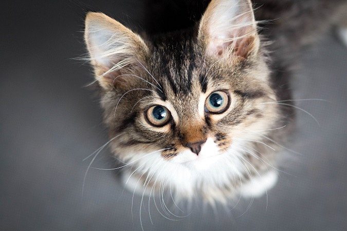

Einfügen von Bildern
- Verändern der Bildgr��e
- Bild horizental zentriert mit Rand
- Bild auf der linken Seite
- Bild auf der rechten Seite
- Verschiedene Bildausrichtungen zum Text
- Bild links mit Textumfluss rechts
- Bild rechts mit Textumfluss links
- Bild mit Textumfluss rechts bis zur H�lfte
Ver�nderung der Bildgr��e

Bild horizental zentriert mit Rand
Bild auf der linken Seite
Bild auf der rechten Seite
Verschiedene Bildausrichtungen zum Text
Bild links mit Textumfluss rechts
Bild rechts mit Textumfluss links
Bild mit Textumfluss rechts bis zur H�lfte
Copyright © Max Mustermann
E-Mail >> example@example.de
Letzte Aktualisierung >> 20.10.2020